Python Developer and Athlete
Backend Programming
Delight the user and make it work.3D modeling
Delight the viewer and make it astonishingPresenting
Take the best out of the worstHello, I am an 18-year-old student from AUBG. My programming journey began at the age of 11, and at 17 I successfully graduated from SoftUni as a Python Web Developer with a perfect GPA of 6.00/6.00. This achievement led to my current active internship at Performalis LTD. I achieved a C1 level of English at 16 and later earned a 1500 SAT score. My main areas of specialization include backend programming, public speaking and presenting, photography, and 3D modeling. In addition to my academic and technical interests, I am an active climbing athlete at the club “Chudnite Skali” in Varna. In my free time, I enjoy spending time with friends and continuously stepping outside of my comfort zone.
Python Developer and Athlete
I would describe myself as responsible, trustworthy, and creative. I categorize myself as a leader with strong teamwork skills and critical thinking abilities. My communication skills have never disappointed me. I enjoy helping people and participating in charity work because I believe in giving, not just receiving. Challenges excite me, which is why I look forward to discovering what the future holds. You can see more of my skills and achievements in the other sections of this site.
Backend Programming
Delight the user and make it work.3D modeling
Delight the viewer and make it astonishingPresenting
Take the best out of the worstProgramming
1st Place in Programming at the National Competition 'IT Znayko'Presenting
1st place in Computer Presentation at the National Competition 'Az Sum IT Bulgarche'Business
1st place at JA Bulgaria's Innovation Camp for Educational CompaniesEnglish Academy - CAE
C1 level of EnglishSoftUni
Graduated as a Python Web-DevITPG Varna
C# Software Engeneer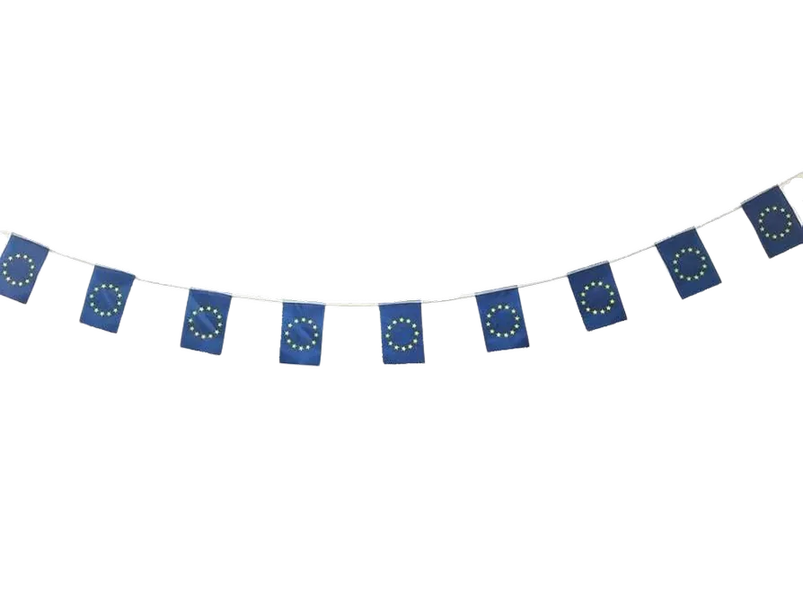
I can confidently say that I've faced many language barriers but have always found ways to overcome them. My first experience was during my first Erasmus+ program in Guadalajara, Spain, where I handled both English and Spanish at just 10 years of age. My second adventure was during the summer of 2022 when I was assigned to teach Russian children at a summer camp, sharing my knowledge about Scratch and introductory programming. My last and most cherished experience was during MTQ25 at AUBG, where I met amazing people from five different nations and excelled in all of our tasks. I'm curious to see what the future has in store for me.
Erasmus+ program in Guadalajara, where we stayed with different Spanish families for a week independently. An incredible journey.
Spring 2016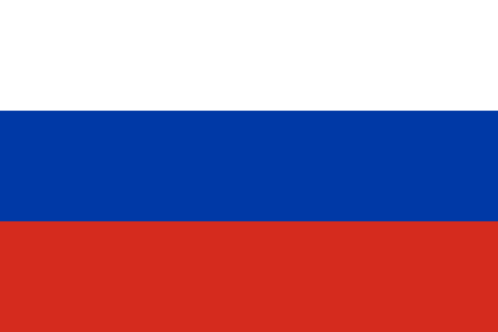
At a Russian summer camp, I taught Scratch programming, with each participant completing an individual project by the program's conclusion.
Summer 2022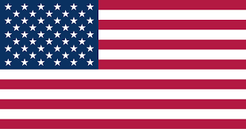
MTQ25 at AUBG was probably my most heartwarming experience, meeting incredible people who shared the same drive and dreams as me.
Fall 2025Everyone was assigned the task of creating and delivering a presentation, but over the years I've developed skills that have earned me multiple awards across various fields.
Graduated from SoftUni at 17 as a Python Web Developer with a 6.00 GPA, completing my final project 'Geek Climbers'—a climbing community social media app.
Developed a fully-fledged notepad in JavaScript for 'Code Wars' (coding competition) featuring 2 light themes, full CRUD functionality, and responsiveness.
I started learning Blender at 14 as a hobby. As I developed my skills, I participated in multiple competitions and worked on 3D projects for my school.
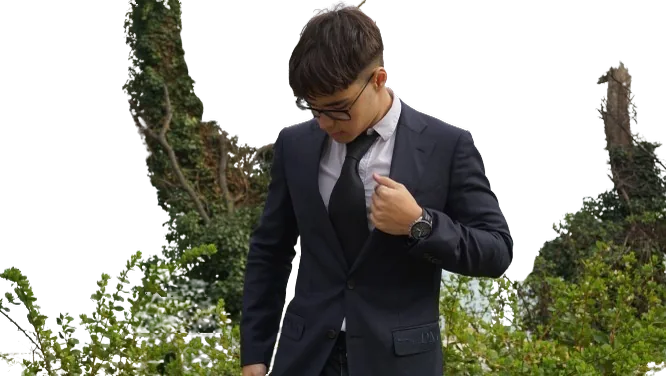
One day during the 2020 lockdown, I saw a YouTube course on how to make a donut in Blender and was immediately engaged. I completed the entire course and felt really proud of my work. After that, I started 3D modeling as a hobby and developed my skills further than I had ever imagined.
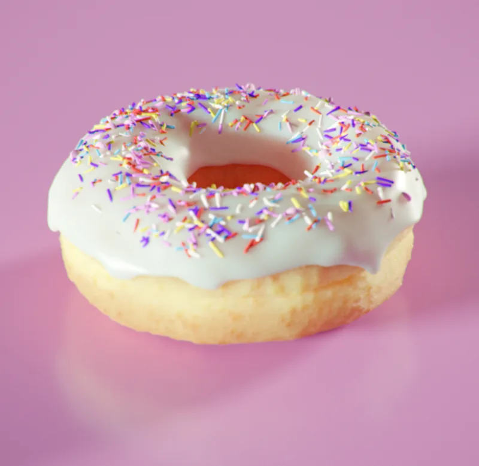
I started calisthenics at 14, but all my friends tried to convince me to join the gym. After a year, I agreed and began my own fitness journey, gaining 15 pounds of lean muscle, learning the principles of discipline, and making many new connections.
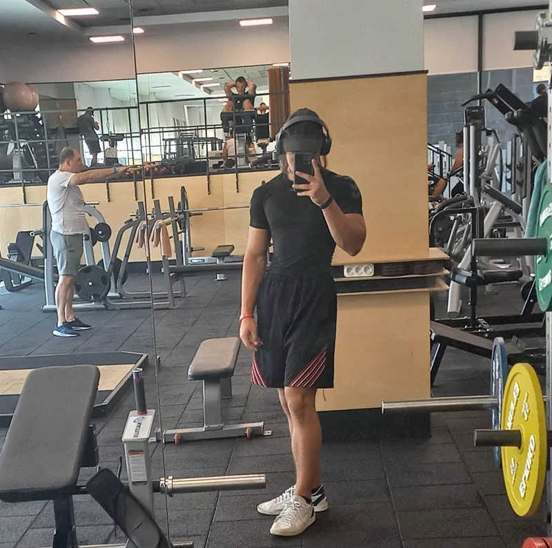
At my grandma's 70th birthday celebration, there was a couple who were professional salsa dancers. When I saw their movements, I immediately became intrigued, and when we returned home, I signed up for salsa lessons. It was a unique and fun experience trying it for the first time.
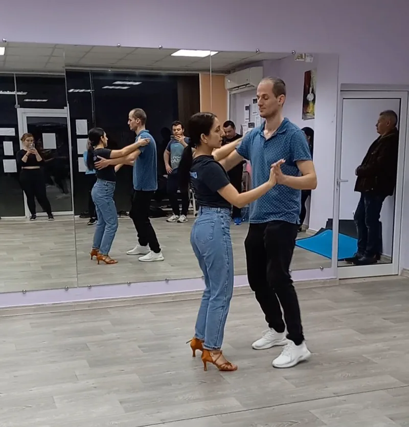
Last summer, I wanted to learn how to surf, but my mother said I should first learn to swim at least at an intermediate level. Coincidentally, one of my friends is a swimming coach, so I signed up for personal training. To this day, he pushes me to my limits every session, and I have improved immensely.
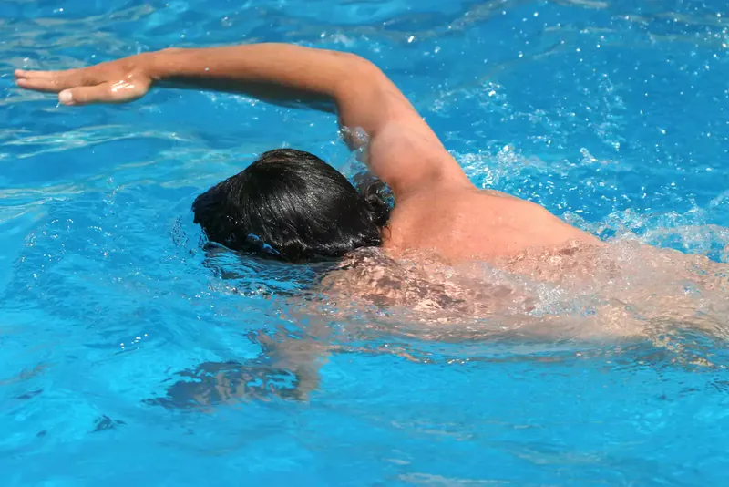
My friend and I were arguing about who was better at which sport, and he mentioned climbing, which I didn't want to believe. We went as a joke to prove who was better. After a few sessions, we fell in love with the sport and became climbing athletes at the club 'Chudnite Skali'.
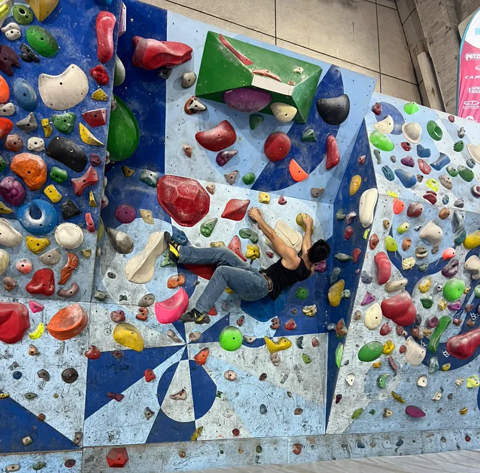
In 8th grade, we had a school concert where one of the seniors performed a guitar recital. This sparked my interest in acoustic guitar and motivated me to start learning. After the school year ended, I took guitar lessons for two years, significantly improving my skills. Now I only play as a hobby with friends.
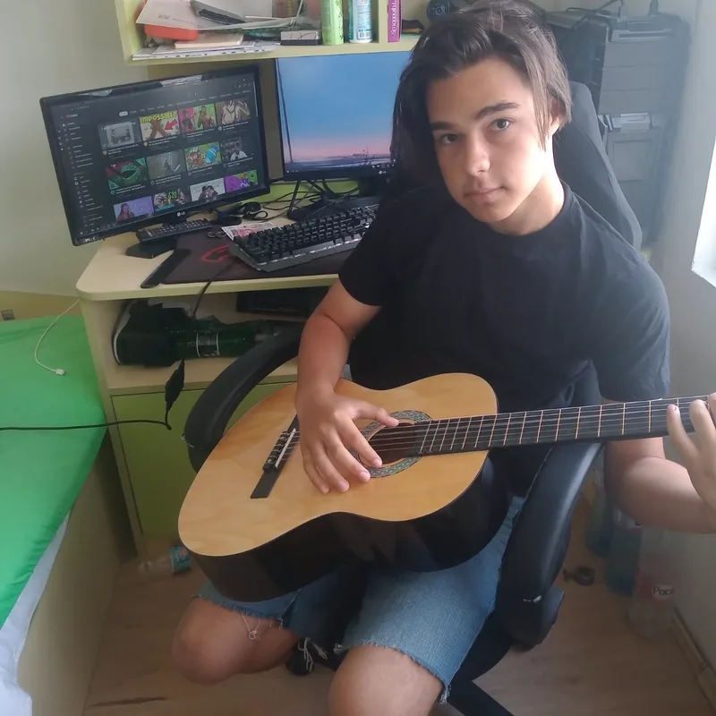
In my spare time, I enjoy playing games. One of my favorites is Teamfight Tactics, an auto-chess game using League of Legends champions. In December 2024, my friend and I reached the top ranks, placing in the top 300 in all of Europe, which required incredible tactics and quick thinking.
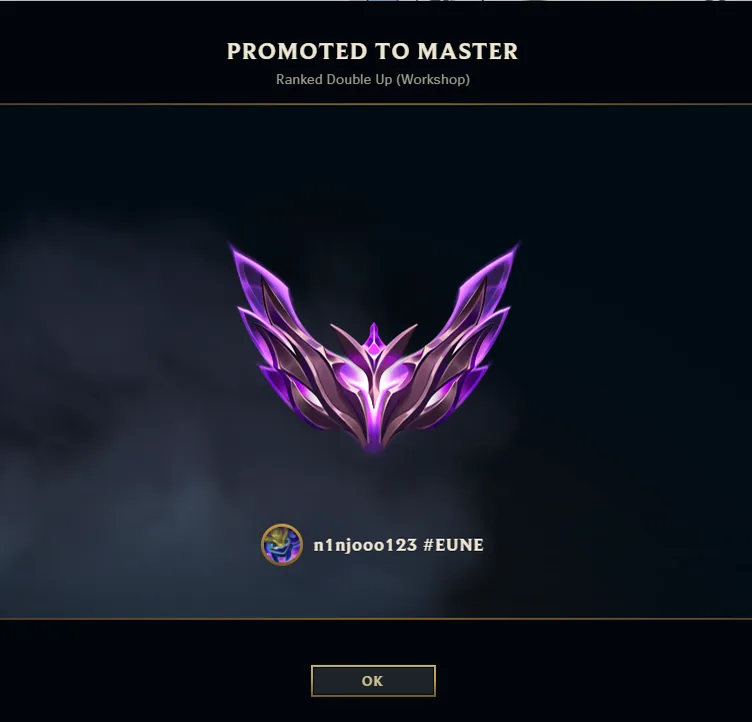
When I want to immerse myself in imagination, I enjoy reading. Last summer, I bought all 26 novels of the Monogatari series. They're written by the famous author NisiOisiN, who is known as the Japanese Shakespeare, demonstrating immense linguistic knowledge and incredible storytelling.